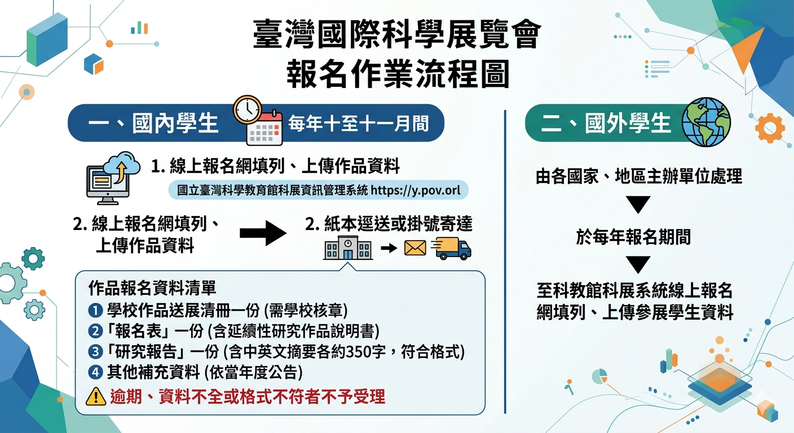
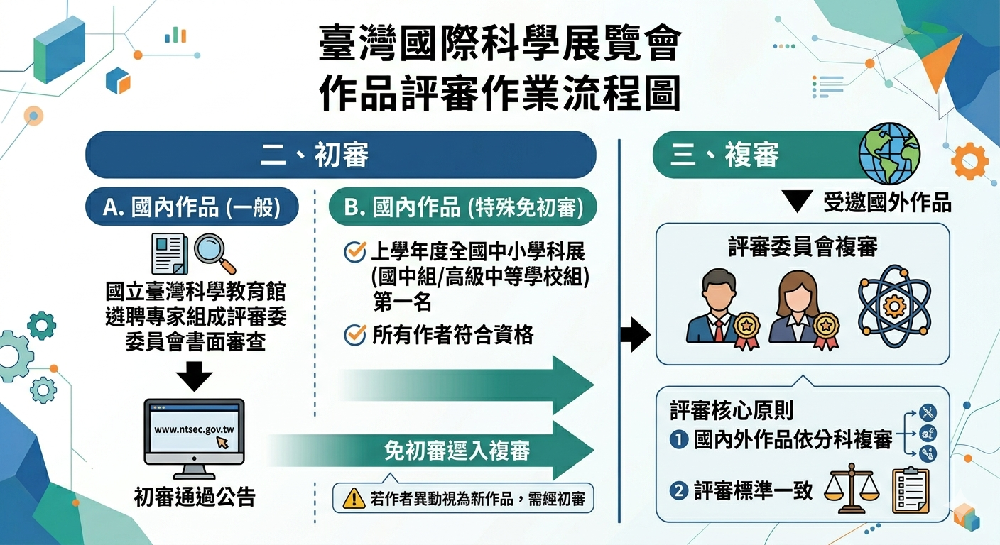
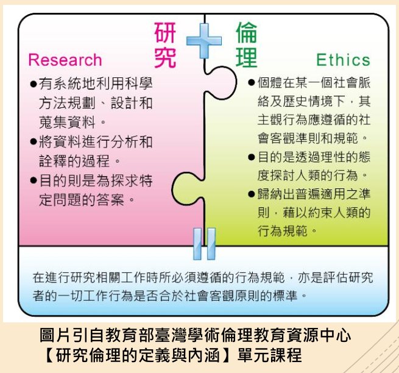
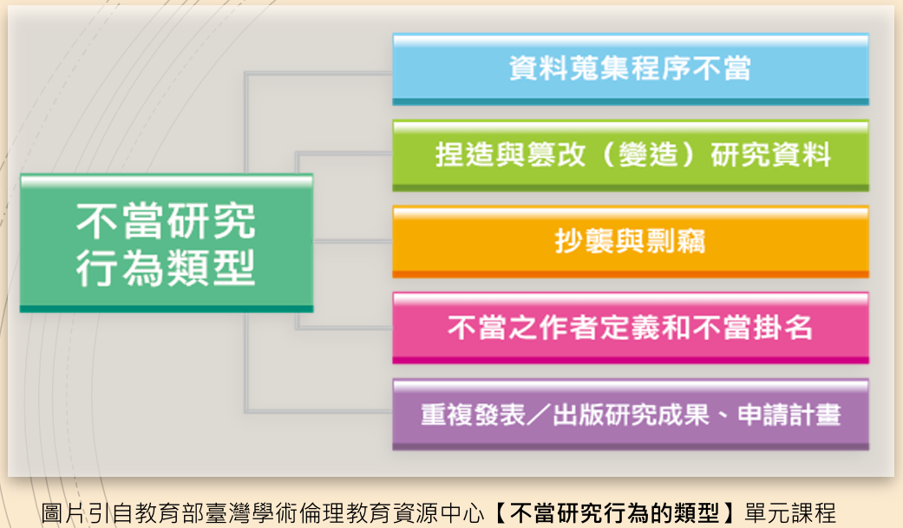

臺灣國際科學展覽會
科展與研究素養介紹
壹、科展與研究素養介紹
一、科展介紹
臺灣國際科學展覽會是由 教育部指導、 國立臺灣科學教育館主辦。
舉辦宗旨如下：
- 培養中等學校學生科學研究興趣，提高科學教育水準，培育未來科技人才。
- 增加學生觀摩國際科展的機會，交換科學研究心得。
- 加強國際科技教育的合作及交流，提升國民外交並爭取國家榮譽。
（一）參展對象、資格
國內學生
| 項目 | 內容 |
|---|---|
| 國籍／年齡 | 具中華民國國籍 ／ 未滿20歲 |
| 就讀年級 |
國民中學三年級 高級中等學校一至三年級 五專前三年級在校學生 |
| 特殊資格 | 國民中學一、二年級學生經學校推薦，具特殊科學素養才能並經審查通過後可越級報名。 |
| 非學校型態實驗教育學生 |
上述教育階段學生，經所屬學籍學校推薦報名； 無學籍者由該直轄市、縣（市）主管機關發給學生身分證明文件並報名。 |
| 不具參展資格 | 已於大學註冊入學者 |
| 人數限制 | 可以個人作品或團隊（二至三人）作品參展，每位學生限報名一件作品參展。 |
國外學生
| 項目 | 內容 |
|---|---|
| 邀請原則 |
辦理科展活動較我國績優的地區國家 與我國有語系關係之地區國家 可交換各國辦理科展經驗之地區國家 |
| 人數限制 | 受邀請之國家或地區，各以派遣學生2人為原則。 |
| 資格與年齡 |
學生須為區域性或全國性比賽中產生之優勝代表。 年齡未滿20歲之國三至高三（或相等年級）在學學生。 |
（二）展覽科別
數學科
數學理論與應用研究
物理與天文學科
物理現象與宇宙研究
化學科
化學反應與材料研究
地球與環境科學科
地球環境與自然科學研究
動物學科
動物行為與生態研究
植物學科
植物生長與環境研究
微生物學科
微生物與細菌相關研究
生物化學科
生物與化學交互研究
醫學與健康科
健康與醫學相關研究
工程學科
工程技術與應用設計
電腦科學與資訊工程科
程式設計與資訊科技研究
環境工程科
環境改善與永續工程
行為與社會科學科
人類行為與社會研究
（三）報名作業
時間
每年十月至十一月間
國內學生報名流程
線上報名
上傳作品資料
列印報名文件
寄送紙本資料
完成報名
※逾期、資料不全或格式不符者不予受理
作品報名資料
- 學校作品送展清冊一份 （經報名系統提交作品資料後列印並經學校人員核章）。
- 「報名表」一份 （含延續性研究作品說明書）。
- 「研究報告」一份 （含中英文作品摘要各約三百五十字）。
- 其他補充資料依當年度公告規定。
國外學生
受邀請作品由各國家、地區主辦單位於每年報名期間， 至科教館科展資訊管理系統線上報名網填列與上傳作品資料。

（四）作品內容
個人或團隊創作且符合下列內容之一者，均得參加展覽：
- 科學專題研究
- 科學技術之創新或改良
- 科學實驗及教學儀器、機具或模型之創作
- 科學探討及解決問題方法之創新及應用
（五）評審
評審標準
（1）研究主題
- 清楚且聚焦
- 對相關研究領域有貢獻
- 可用科學方法檢驗
（2）創意、學術或實用價值
- 有原創性，方法具可行性
- 對科學、社會或經濟具有影響潛力
（3）科學方法之適切性
- 設計周全之研究計畫
- 控因及變因清楚、適當及完整
- 有系統地收集數據及分析
- 結果具有再現性
- 適當應用數學及統計方法
- 數據足以證實結論及釋義
（4）展示及表達能力
- 海報資料具邏輯性
- 海報有清晰圖表及圖例
- 備有研究日誌及參考文獻
- 回答問題清楚簡潔
- 了解相關科學原理
- 了解結果與結論之限制
- 處理與執行作品之獨立度
- 團體作品所有作者皆理解並有貢獻
- 具未來研究方向與構思
初審
- 國內作品研究報告由國立臺灣科學教育館遴聘專家學者進行書面審查。
- 通過初審作品將公告於國立臺灣科學教育館官網。
- 上學年度全國中小學科學展覽會國中組與高中組第一名作品，符合資格者可免初審。
複審
- 通過初審之國內作品與受邀國外作品，由評審委員會進行複審。
- 國內外作品皆依分科複審，評審標準一致。

圖片製作：OpenAI（2026）。Gemini（02月19日3.1版本）[大語言模型]。
資料來源：教育部（2026）。臺灣國際科學展覽會實施要點。國立臺灣科學教育館。
https://twsf.ntsec.gov.tw/Article.aspx?a=32&lang=1
資料來源：教育部（2026）。臺灣國際科學展覽會實施要點。國立臺灣科學教育館。
https://twsf.ntsec.gov.tw/Article.aspx?a=32&lang=1
二、研究素養介紹
Shapiro和Hughes在1996年提出資訊素養的課程中應涵括：
- 工具素養（tool literacy）
- 資源素養（resource literacy）
- 社會－結構素養（social-structural literacy）
- 研究素養（research literacy）
- 出版素養（publishing literacy）
- 科技素養（emerging technology literacy）
- 批判素養（critical literacy）
研究素養是指運用資訊科技的工具，以完成研究的能力，不僅要懂得使用量化及質化分析軟體系統，還要能分析與了解不同軟體的特性以及限制，並能善用線上資源。
資料來源：吳美美（n.d.）。研究素養。樂詞網。
https://terms.naer.edu.tw/detail/fee73cafc8b4ed92b2769e3b02e355f5/?startswith=zh&seq=1
https://terms.naer.edu.tw/detail/fee73cafc8b4ed92b2769e3b02e355f5/?startswith=zh&seq=1
學術倫理與研究倫理
學術倫理（Academic Integrity，亦稱學術誠信）是「即使在逆境或困難中，仍然能夠堅持誠實、信任、公平、尊重、責任、勇氣六項基本價值觀的承諾」。

不當研究行為
指有明確的證據顯示，研究者明知不當、卻仍故意進行明顯偏離普世所能接受的研究作為。
研究過程中應遵守學術倫理與研究誠信，避免抄襲、造假、竄改數據等不當研究行為。
資料來源：國立臺灣科學教育館（2025，1月7日）。科展競賽沿革與科展研究倫理。
國立臺灣科學教育館科展資訊管理系統。學術倫理：37-38、不當研究行為：45-61。
https://twsf.ntsec.gov.tw/Article.aspx?a=42&lang=1
國立臺灣科學教育館科展資訊管理系統。學術倫理：37-38、不當研究行為：45-61。
https://twsf.ntsec.gov.tw/Article.aspx?a=42&lang=1